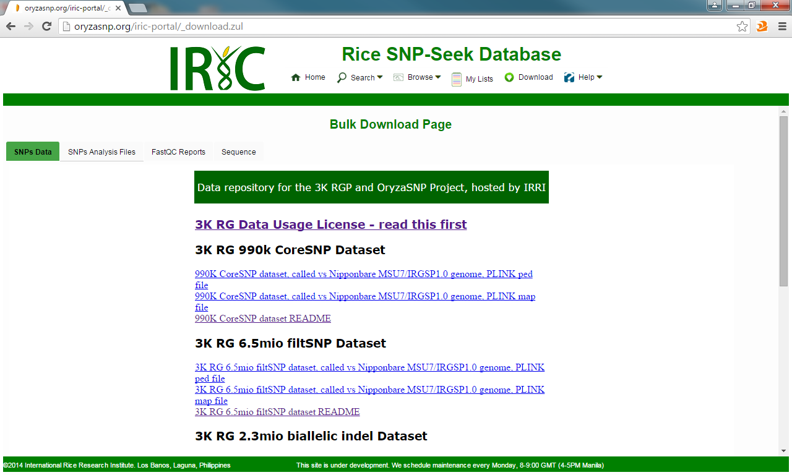

The Bulk Download Page provides links for:
- SNPs data in PLINK format
- FastQ and FastQC reports
- BAM and VCF from Amazon S3
- Sequence - generate alternate sequence for the list of varieties and region
Created with the Personal Edition of HelpNDoc: Free EPub and documentation generator